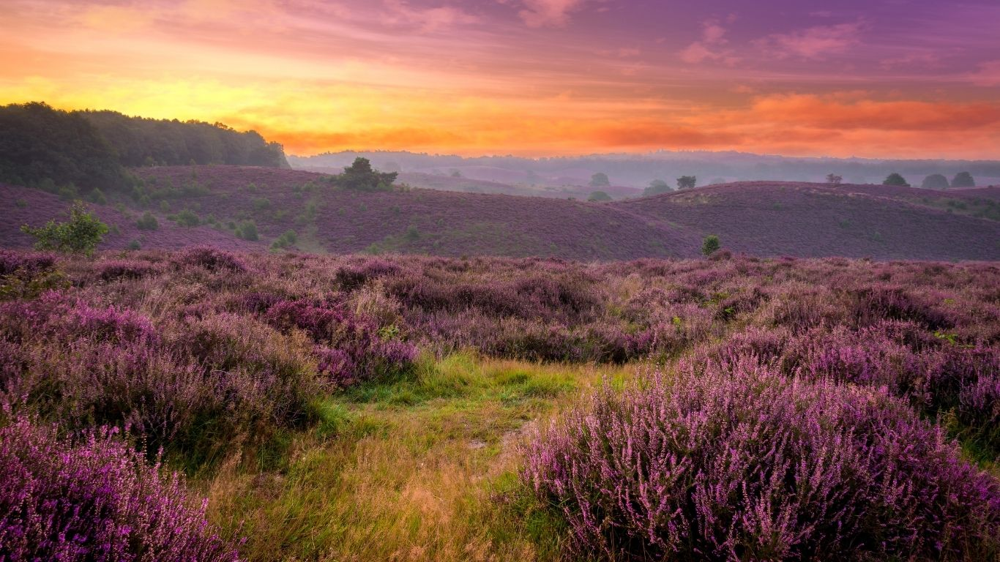
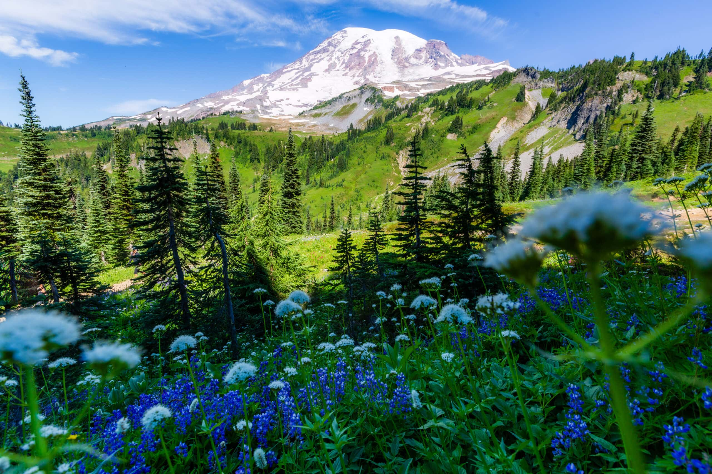

Natural Parks And Their Beauty
Nature parks are protected areas maintained to preserve biodiversity and natural resources. They provide habitats for native plant and animal species and protect vulnerable ecosystems from human activities such as deforestation and urbanization. Visitors to nature parks can enjoy the tranquility and beauty of nature while learning about environmental conservation and sustainability. Nature parks play a crucial role in preserving biodiversity, offering recreational opportunities, and contributing to the conservation of important natural landscapes and water sources, which is essential for the environment and future generations. Nationaal Park De Hoge Veluwe is the largest contiguous nature area in the Netherlands and is located in the province of Gelderland. The park features a mix of forests, heathlands, sand dunes, and ponds. In addition to the beautiful nature, you can also spot wild animals such as red deer, wild boars, and mouflons here. The Kröller-Müller Museum, located within the park, is famous for its art collection and sculptures. Located on the coast of North Holland, Nationaal Park Zuid-Kennemerland stretches across dunes, forests, and beaches. This park is a perfect example of Dutch coastal nature and offers visitors the chance to see wild horses, Scottish Highland cattle, and a variety of bird species. The dunes serve as an important buffer against the sea and protect the inland areas.
Nationaal Park De Hoge Veluwe is het grootste aaneengesloten natuurgebied van Nederland en ligt in de provincie Gelderland. Het park biedt een mix van bossen, heidevelden, zandverstuivingen en vennen. Naast de prachtige natuur kun je hier ook wilde dieren zoals edelherten, wilde zwijnen en moeflons spotten. Het Kröller-Müller Museum, dat zich in het park bevindt, is beroemd om zijn kunstcollectie en beelden.
Gelegen aan de kust van Noord-Holland, strekt Nationaal Park Zuid-Kennemerland zich uit over duinen, bossen en stranden. Dit park is een perfect voorbeeld van de Nederlandse kustnatuur en biedt bezoekers de mogelijkheid om wilde paarden, Schotse hooglanders en een diversiteit aan vogelsoorten te zien. De duinen vormen een belangrijke buffer tegen de zee en beschermen het binnenland.
Why Natural Parks ?
Natural parks are essential because they play a vital role in preserving biodiversity and protecting ecosystems. By safeguarding large areas of land, they provide habitats for endangered species, prevent the loss of plant and animal life, and maintain ecological balance. These parks also help regulate climate, protect water sources, and reduce pollution by maintaining healthy forests and wetlands. Furthermore, natural parks offer recreational and educational opportunities for people to connect with nature, promoting environmental awareness and appreciation. In a world facing climate change and habitat destruction, natural parks are crucial for ensuring the survival of diverse species and protecting our planet's natural resources for future generations.
Top Natural Parks In Nederland
The breathtaking national parks of the picturesque Netherlands are just waiting to be explored. From vast forests and heaths to rivers, marshes and tidal landscapes – the parks are natural treasures for residents and visitors alike and a paradise for nature lovers and adventure seekers. Whether on foot, by bicycle or on horseback, you’ll be amazed by the diverse plants and animals and the huge variety of landscapes. Whichever park you choose, you will be sure to have an unforgettable experience.
The parks of Central Netherlands welcome adventurers with their diverse landscapes. The Hoge Veluwe is a masterpiece of wooded hills, heathland and the unmissable Kröller-Müller Museum. The Utrechtse Heuvelrug has undulating forests and historic estates, perfect for long walks. Natural beauty and cultural history merge in the Veluwezoom, with lush forests and castles, and the Nieuw Land National Park shows the struggle against water and the art of land reclamation. The diversity of the Central Netherlands parks also includes the flora and fauna of the NLDelta National Park, with its rivers and unique biodiversity. These parks embody the beauty of the Netherlands and offer rest and relaxation, recreation and a close relationship with nature for both residents and visitors.